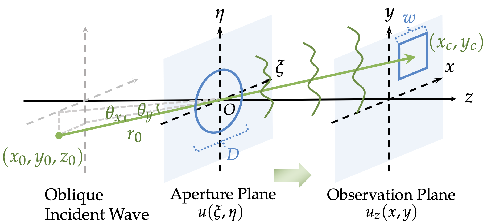
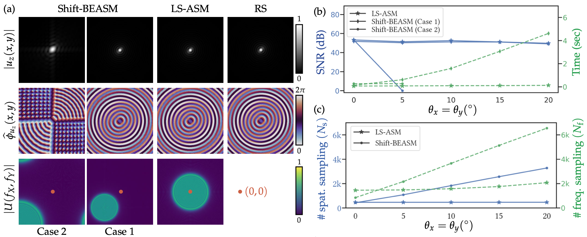

(a) Diagram of off-axis diffraction.
(a) Diagram of off-axis diffraction.
(b) The Linear Phase Compensation (LPC) shifts the angular spectrum of the input field to the frequency center.

(a) Visual results of the amplitude (first row) and phase (second row) of the complex PSF, and the amplitude for the angular spectrum (third row) of the input field at 3 degrees. The amplitude of the PSF and the angular spectrum is normalized by respective maxima. In the third row, the red dots denote the center of the angular spectrum. (b) SNR and runtime w.r.t. incident angles. (c) Sampling number w.r.t. incident angles.